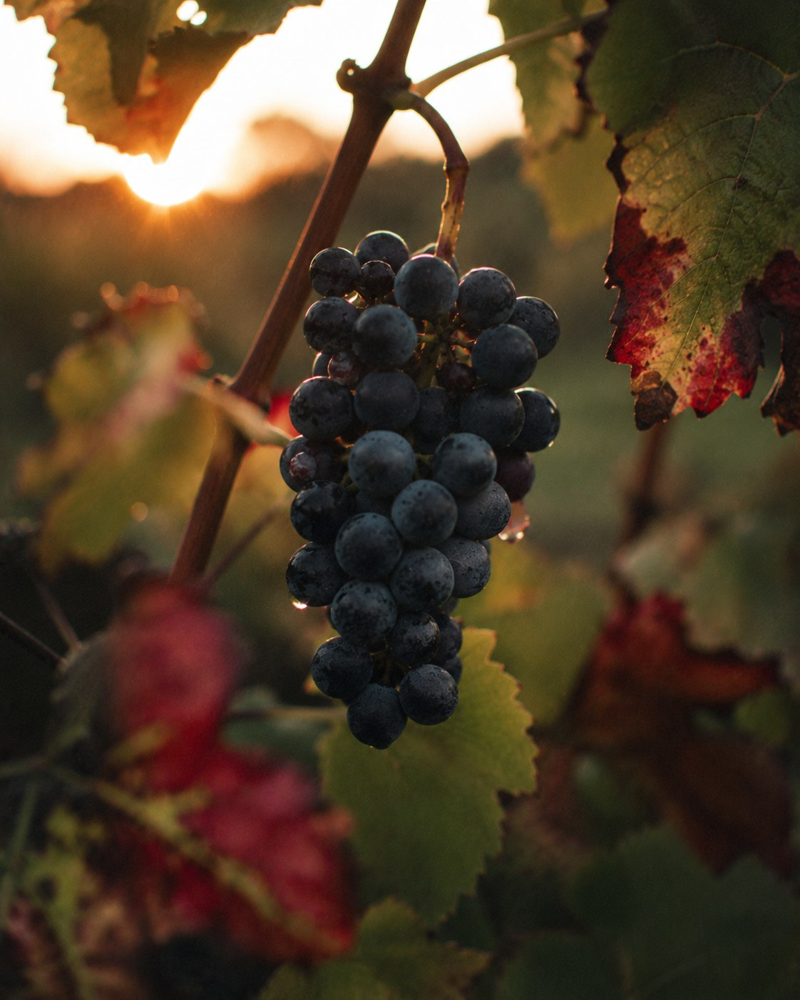
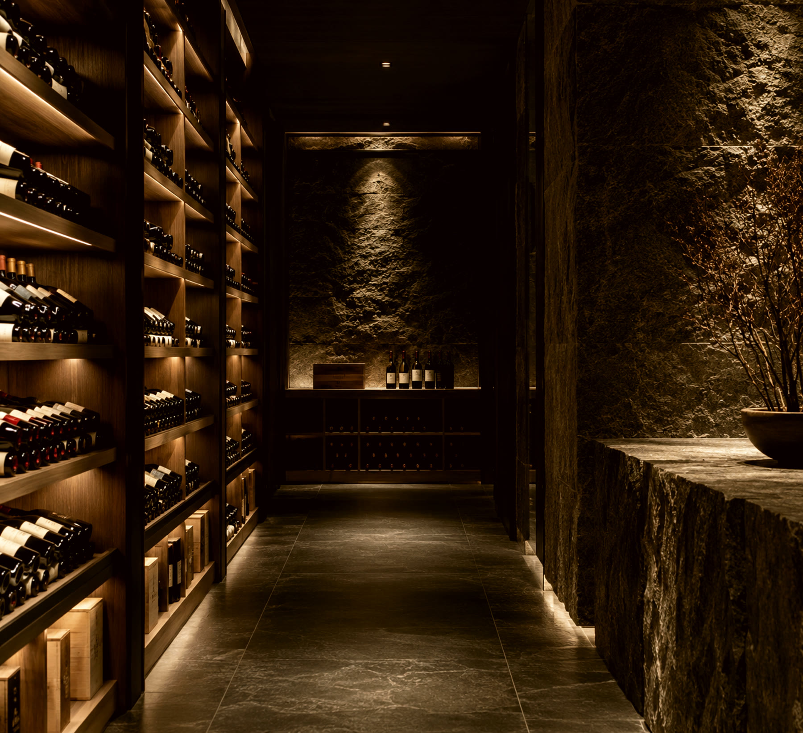
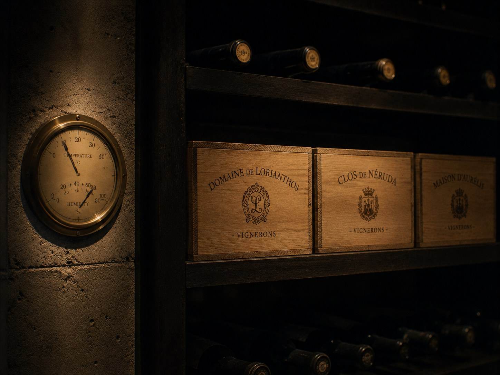
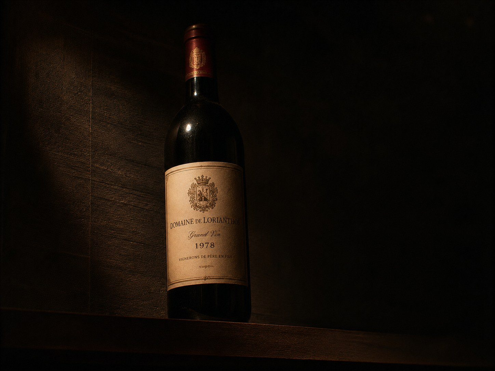
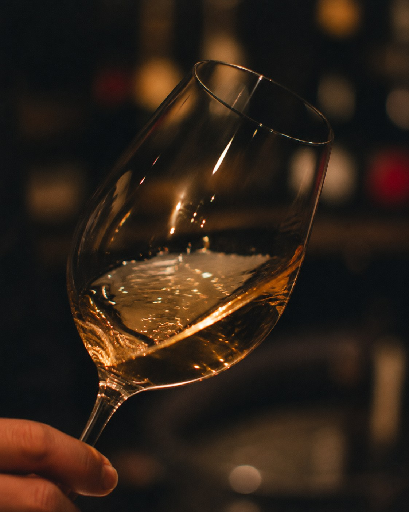

Wine Business
ワイン事業
世界各国から厳選したワインを直輸入し、良心的な価格で飲食店様にお届けします。
Introduction
この日本に、
ワインと豊かな食文化を。
フランス、イタリア、スペイン、アメリカ、チリ、オーストラリアなど、 世界各国から厳選したワインを直輸入しています。
ご家庭の食卓から街角のビストロ、グランメゾンのレストランまで、 さまざまなシーンを想定して仕入れたワインを、良心的な価格でご提供することで、 ワインの普及に努めてまいりました。これからもワインと豊かな食文化の 創造と普及を目指し、お客様視点でより良いビジネスへと進化を続けていきます。

Wine Division
仕入れ・直輸入
ワインについての深い知識と、飲食店様やエンドユーザーの志向を 知り尽くした専門性を活かし、厳選したワインを直輸入しています。
価格に頼らず美味しいワインを発掘することを、何よりの喜びとしています。 特別な日のための一本だけでなく、日常に寄り添う手頃なワインも、 消費者目線に立った徹底したテイスティングと選定を経てご提供します。 近年需要が高まるオーガニックワインの取り扱いにも力を入れています。

輸送・保管・品質管理
「現地で飲む感動をそのままに、最高の状態でワインをお届けしたい。」 1本のワインが生産者のもとからお客様の手に届くまで、 すべての過程に妥協はいたしません。
可能な限り、生産者から国内倉庫までリーファー（定温）コンテナでの輸送を行い、 入港後も飲料輸送に特化した定温保税倉庫で通関・検品を実施。 輸送コンテナ内には温度計を設置し、輸送中の温度を常にモニタリングすることで、 ワインにダメージを与える急激な温度変化を見逃さない体制を整えています。

こだわりのワイン
ファインワインからデイリーワインまで、幅広い品ぞろえ。 良いものを良心的な価格で、生産者の熱い思いとともにお届けします。
レストラン様のニーズが高い、飲み頃を迎えたヴィンテージワインの ラインナップにも力を入れており、熟成ワインの魅力をより多くの方に 知っていただく機会をご提供しています。


Sommelier
ソムリエ・エクセレンスの目利きで。
日本ソムリエ協会認定の上級資格「ソムリエ・エクセレンス」を持つ 代表・山下健太が、生産者の選定からテイスティングまで一貫して手がけます。
経営コンサルティングの現場で培った飲食店様の視点と、 ソムリエとしての専門知識を掛け合わせることで、 「売れる」だけでなく「物語のある」一本をご提案します。
ワインの仕入れは、匠にお任せください。
飲食店様向けの卸売はもちろん、単発でのご相談も承ります。